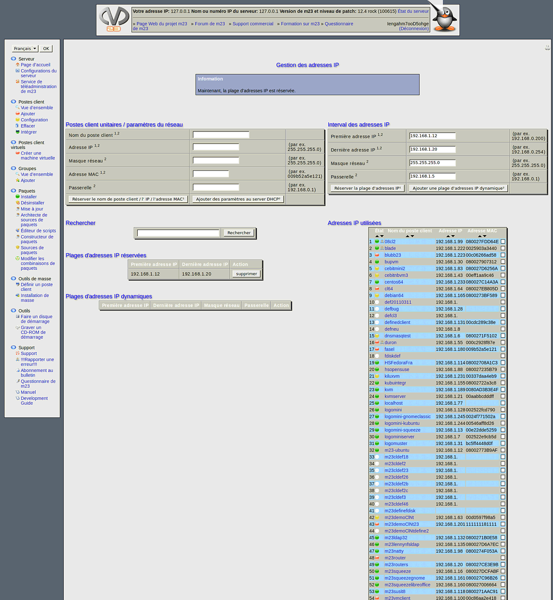

suivant:
Postes client unitaires /
monter:
Serveur
précédent:
Réstitution de votre serveur
Table des matières
Gestion des adresses IP
Ce dialogue vous aide à gérer les paramètres de réseau pour des machines hors de m23.

Sous-sections
Postes client unitaires / paramètres du réseau
Interval des adresses IP
Tableaux d'adresses
root 2017-01-05